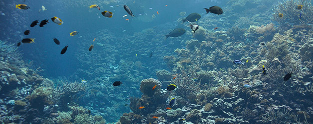

FERTILIZANTES NPK
¿QUÉ ES EL NITRÓGENO? (N)
Las Plantas requieren el nitrógeno (N) para hacer crecer sus raíces y tallos. El Nitrógeno debe ser proporcionado constantemente para que la planta pueda desarrollar efectivamente granos, frutas, nueces y vegetales que son esenciales para la nutrición humana. El Nitrógeno es necesario para todo tipo de plantas y vida animal, no existiendo ningún substituto. El nitrógeno es vital para la producción de alimentos.
Las Plantas requieren grandes cantidades de Nitrógeno.
Las producciones de cultivos para consumo humano y consumo animal, utilizan grandes cantidades de N.
Los siguientes ejemplos nos indican la gran demanda de N y que la producción agrícola debe proveer para producir comida con calidad para llevar una vida sana;
Los cultivos de maíz en Norte América necesitarán extraer mas de 2,700 millones de kilos de N de los suelos cada año; Esto representa mas de 9 kilos por cada hombre, mujer y niño.
Los cultivos utilizados para proveer de comida a los animales que consumimos utiliza 3,350 millones de kilos de N cada año, solo la Alfalfa requiere 2,250 millones de kilos.
Los cultivos de trigo que son utilizados para hacer pan y cereales, necesitan 110 millones de kilos de N y que son estos extraídos de los suelos cada año.
Los cultivos de frutas y vegetales también son grandes consumidores de N; el maíz dulce, frijoles, uvas y los chiles pimientos necesitan mas de 90 kilos por hectárea cada uno; Los jitomates, cebollas, peras y piñas necesitan de 140 a 180 kilos por hectárea.
El Nitrógeno forma parte de todas las proteínas sean animales o de las plantas, esto significa que es vital para la dieta humana. El Nitrógeno es un componente del ADN el cual pasa la información genética de generación a generación. La existencia de la vida humana depende grandemente de la abundancia de N en la naturaleza.
¿QUÉ ES EL FÓSFORO? (P)
El fosfato es representado por P Se presenta en cada célula sea animal o de las plantas. La energía capturada por la fotosíntesis no seria suficiente para poder satisfacer las necesidades de las plantas, el fosfato sirve como un energético en las plantas para que estas estén siempre saludables y la producción sea de gran calidad.
La demanda por el fosfato
Las plantas toman grandes cantidades de P de la tierra. En un año como ejemplo en los Estados Unidos, en los cultivos de maíz, trigo y alfalfa remueven un total de casi 680 millones de kilos de P del suelo.
En la mayoría de los casos las raíces de las plantas no son lo suficientemente largas para poder absorber el fosfato que se encuentra muy por debajo de la superficie de la tierra. El fosfato necesario para ser absorbido por las raíces deberá provenir entonces de la aplicación de fertilizantes.
P es importante debido a las funciones vitales que da a los cultivos, y estos se pueden perder por la falta de este mineral. P da la energía necesaria a las plantas con la cual se evitan las enfermedades y las hacen madurar mas rápido para una producción con alto grado nutricional.
La fotosíntesis es el proceso natural necesario para el crecimiento de las plantas, esta requiere de componentes de P para obtener el dióxido de carbono del aire y los azucares del agua en los suelos.
El fósforo es tan vital en la agricultura como el sol, sin P el sol nunca podría transmitir su energía a un pedazo de pan o en un jugo de naranja.
¿QUÉ ES EL POTASIO? (K)
El potasio es representado por la letra K en la tabla periódica. Es encontrado en cada célula y es el tercer mineral de nuestro cuerpo, superado solamente por el calcio y por el fósforo. Más del 85% del K del cuerpo humano se encuentra en los músculos, en la sangre, en la piel, en el sistema digestivo y órganos internos como el hígado.
El potasio se encuentra en toda forma de vida y es gran parte de nuestras vidas.
El potasio es vital para el desarrollo de cualquier persona, falta de este puede ocasionar problemas cardiacos, cansancio, problemas de la presión, perdida de líquidos del cuerpo, stress, y fiebre alta siendo estos algunos de los principales síntomas que causa la falta de este valioso mineral. Es por esto importante suministrarlo a nuestros cuerpos de una manera natural por medio de una dieta balanceada.
El papel que juega el Potasio en las plantas
El potasio en las plantas juega un rol muy similar que en los humanos. Una de las grandes diferencias es que las plantas no pueden decirnos cuando están cansadas o cuando tienen hambre. Las plantas desarrollan síntomas visibles como la tornación de las hojas en color café en las puntas y la calidad de su producto es inferior, por ejemplo; en los árboles de naranjas la fruta cae antes de estar madura, las fresas no desarrollan su dulce sabor y los tomates son pequeños con mucha cáscara blanca.
El análisis químico en las plantas es una herramienta que proporciona estos indicadores, de esta manera se conocerá cuales minerales les hace falta para poder proveer de estos elementos al subsuelo.
En la actualidad existe personal especializado en el análisis de las plantas y también en la tierra; estos agentes han desarrollado las técnicas y la información necesaria para poder incrementar la productividad de los cultivos en un mínimo 30%
Cada plantación o cada cultivo es una producción individual, todas las plantas requieren cierta cantidad de mineral básico para poder obtener un nivel eficiente de productividad. El potasio es la clave de esos materiales
La mayor parte de las reservas mundiales de potasio fueron creadas cuando las aguas del mar de los antiguos océanos se evaporaron y las sales de potasio se cristalizaron en depósitos de potasa. A través del tiempo, la superficie de la tierra cambió y estos depósitos fueron enterrados a cientos de metros de profundidad. Los yacimientos de potasa están en minas muy profundas, tanto que pueden yacer a unos 1,000 metros
El mineral minado es una mezcla de cloruro de potasio (KCI) y cloruro de sodio (NaCL) más conocido como sal de mesa. En las plantas de procesamiento instaladas en la superficie llamadas "molinos", el KCI es separado de la mezcla de KCl/NaCl para producir un fertilizante natural de gran potencial (K)